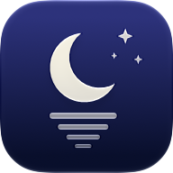

Privacy Policy
MoonLake for iPhone, iPad, Mac and Apple Watch
Effective 7 November 2026. ← Back to MoonLake
The short version
MoonLake doesn't collect any data about you. There's no account, no analytics, no advertising and no tracking. It talks to the servers you add, and everything you enter stays on your devices. The only exception is the notification relay, used only if you subscribe to MoonLake Pro+ and turn on notifications or downloads on the Lock Screen: it holds this device's push tokens and nothing else.
What stays on your device
- Your servers: the names and addresses of the services you add (SABnzbd, NZBGet, Sonarr, Radarr, Tautulli, Prowlarr, Bazarr and indexers) are stored on your device.
- API keys and passwords are stored in your device's Keychain.
- Preferences, such as which screen opens at launch and how libraries are sorted.
- The Releasing Today widget reads a list of upcoming release titles and dates that MoonLake saves on your device.
- Apple Watch: your iPhone sends your Watch that list of releases, and the live download and stream status the Watch asks for. Server addresses and API keys never leave your iPhone.
iCloud Backup
Unless you turn it off in Settings → iCloud Backup, each of your devices keeps a copy of its MoonLake servers and preferences in your own iCloud account (iCloud key-value storage), and of its API keys and passwords in iCloud Keychain, which encrypts them end to end. That lets any of your devices signed in to your Apple Account restore your settings. It's stored by Apple under your account; the developer can't see or access it. Turning the backup off on a device, or deleting a device's backup, removes that copy from iCloud.
None of this is sent to the developer or anyone else. Deleting an instance in MoonLake's Settings removes its address and key; deleting the app removes its settings, though iOS may keep Keychain entries until the device is erased.
Who MoonLake connects to
- The servers you add, at the Home and Away addresses you enter. Requests carry the API key you provided, as each service requires. Posters and artwork come from your own Sonarr, Radarr and Tautulli.
- Plex, for user avatars, at the addresses Tautulli provides.
- TheTVDB and The Movie Database, for posters in Add Series and Add Movie search results, at the addresses Sonarr and Radarr provide.
- Websites you choose to open, such as IMDb or an indexer's release page, open in your browser only when you tap a link.
MoonLake asks for Local Network access so it can reach servers on your home network. It uses that access for nothing else.
Demo Mode uses sample data built into the app and makes no network connections.
Notifications (MoonLake Pro+)
MoonLake Pro+ is available from MoonLake 1.1.
Notifications and self-starting downloads on the Lock Screen go through MoonLake's notification relay at relay.geps.au, run by the developer on Cloudflare. It's only used if you subscribe to Pro+ and turn one of them on.
- What the relay keeps: a random ID for your device, the push tokens Apple issues for MoonLake on it, which events you want notifications for, and whether it's a test build. If you share a live progress helper between your devices, it also keeps which devices share it and whether each is an iPhone or iPad. Nothing that identifies you, and never your server addresses, API keys or passwords.
- Your servers send events to it: when you connect a server in Settings → Notifications, MoonLake adds a webhook with a private address to that server. The server sends the relay events (such as "Grabbed" with the episode's title), which the relay turns into a notification and passes to Apple's push service for your device straight away. Events aren't stored.
- NZBGet: NZBGet can't send webhooks, so connecting it installs MoonLake's small extension in NZBGet (downloaded from this website) and adds your device's private address to its settings. It sends the relay only a download's name, category and result. Disconnecting removes your address, and switches the extension off once no device uses it.
- Bazarr: connecting it adds your device's private address to Bazarr's JSON notification provider. Bazarr then sends the relay the title and the subtitle it found (such as "English subtitles downloaded from opensubtitles").
- Limits: the relay counts events per device per hour, to stop a misconfigured server flooding you, and keeps those counts briefly. Cloudflare may keep standard request logs for a short time.
- Turning it off: turning off notifications and downloads on the Lock Screen, a Pro+ subscription ending, or Erase All Settings deletes this device's record from the relay. Any webhook left on a server then does nothing; Disconnect in Settings removes it from the server.
Purchases
MoonLake Pro and Pro+ are bought through the App Store. Apple handles the payment; MoonLake only learns whether Pro or Pro+ is unlocked, and never sees your payment details or Apple Account.
Children
MoonLake isn't directed at children and doesn't knowingly collect information from anyone, of any age.
Changes
If this policy changes, the new version will be posted on this page with a new effective date.
Contact
Questions about privacy: moonlakeapp@geps.au.
© 2026 GE Project Solutions. MoonLake isn't affiliated with SABnzbd, NZBGet, Sonarr, Radarr, Tautulli, Prowlarr, Bazarr, Plex, TheTVDB, The Movie Database or any indexer.